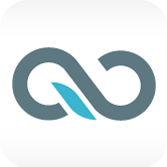
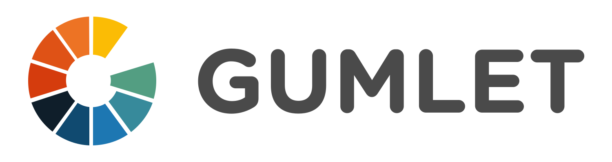

Cloudflare
反向代理、缓存与安全平台
Cloudflare CDN 以 DNS 切换接入的反向代理模式为主，覆盖静态资产、匿名 API 响应与动态内容优化，并提供缓存规则、分层缓存和快速清缓存等控制。
适合 · 网站、API、SaaS 与希望快速接入安全能力的团队
资料查阅: 2026-10-14了解公开产品定位，找到适合真实业务的服务商。
63 家 CDN 服务商
反向代理、缓存与安全平台
Cloudflare CDN 以 DNS 切换接入的反向代理模式为主，覆盖静态资产、匿名 API 响应与动态内容优化，并提供缓存规则、分层缓存和快速清缓存等控制。
适合 · 网站、API、SaaS 与希望快速接入安全能力的团队
资料查阅: 2026-10-14企业 CDN、Anycast 与 DDoS 防护
YewSafe 官网介绍 SCDN 静态内容交付、Anycast CDN、DDoS 缓解、应用防护与 Edge AI 产品，并面向游戏、金融、直播和 AI 场景提供方案。
适合 · 需要同时评估内容交付与业务防护的企业项目
资料查阅: 2026-10-14企业级内容、应用与媒体交付
Akamai 面向大型企业的内容交付、应用性能和媒体分发场景，配置体系强调缓存规则、回源控制、流量治理与企业运营。
适合 · 大型网站、媒体平台、跨区域企业应用
资料查阅: 2026-10-14可编程边缘与实时可观测
Fastly 的官方 CDN 产品强调可编程控制、实时可观测、快速清缓存与内置安全，适合希望把发布、路由和内容策略放到边缘处理的工程团队。
适合 · 动态站点、API、发布频繁的工程团队
资料查阅: 2026-10-14高防加速与业务防护导向
CDN5 官网将高防 CDN、DDoS / CC 防护、WAF 与游戏 SDK 盾放在核心产品位置，适合把安全防护和内容加速一起评估的业务。
适合 · 游戏、媒体、API 与需要高防接入的项目
资料查阅: 2026-10-14AWS 原生的内容交付与边缘计算
CloudFront 与 S3、ALB、Lambda@Edge 等 AWS 服务衔接紧密，官方产品页覆盖低延迟交付、压缩、边缘计算和安全控制。
适合 · 已经运行在 AWS 上的团队
资料查阅: 2026-10-13Google 全球边缘网络与精细缓存控制
Google Cloud CDN 依托 Google 全球边缘网络，支持来自任意 HTTP 源站的内容，并提供缓存键、TTL、Cloud Armor、日志与指标等控制。
适合 · Google Cloud、跨云或自有源站项目
资料查阅: 2026-10-13Azure 原生的全球应用入口
Azure Front Door 将全球内容交付、动态与静态内容加速、WAF、机器人防护和 DDoS 防护放在同一套 Azure 边缘入口中。
适合 · Azure 应用、混合源站与全球 API
资料查阅: 2026-10-13面向中国与全球业务的云 CDN
Alibaba Cloud CDN 提供静态内容、下载与视频等内容加速，并与阿里云源站、日志、监控和安全产品形成云上组合。
适合 · 中国内地、亚太与阿里云生态项目
资料查阅: 2026-10-13全球 CDN、边缘安全与函数能力
EdgeOne 官方定位是 CDN、安全与边缘服务的一体化产品，覆盖 DDoS、Web 应用、Bot 防护、访问控制与边缘函数等能力。
适合 · 游戏、SaaS、跨境站点与腾讯云生态
资料查阅: 2026-10-13面向开发者的轻量内容交付
Bunny.net 以易用的 CDN、存储和视频产品组合面向开发者，适合希望快速上线静态资源、下载或媒体分发的项目。
适合 · 独立开发者、静态站点与中小型媒体项目
资料查阅: 2026-10-13视频与大规模内容交付
CDN77 提供内容交付服务，官方产品资料重点介绍直播、点播及高流量媒体分发，也列出安全服务。适合把视频交付与技术支持一起评估的团队。
适合 · 视频平台、下载与大流量媒体
资料查阅: 2026-10-14CDN、边缘开发与云服务组合
Gcore 官网将 CDN、动态加速、流媒体及 FastEdge 放在边缘产品体系中，并提供安全和云服务。不同产品的套餐与交付范围需要分别确认。
适合 · 同时评估分发、边缘逻辑与云服务的项目
资料查阅: 2026-10-14媒体、游戏与专用 CDN 交付
CacheFly 官方定位侧重直播、游戏发布和媒体分发，并列出源站屏蔽、日志流和专用 CDN 等服务。适合对交付控制和技术协作有明确需求的项目。
适合 · 媒体平台、游戏发行与专用分发
资料查阅: 2026-10-14与应用防护结合的安全 CDN
Imperva 的 Secure CDN 官方资料将缓存、负载均衡和内容交付与 Web 应用及 API 防护结合。评估应同时覆盖访问性能、规则兼容与合法请求的处理。
适合 · 需要统一评估应用安全和网站交付的企业
资料查阅: 2026-10-14全球内容交付与边缘基础设施
EdgeNext 官网介绍全球 CDN、动态与静态加速、直播以及云安全和计算服务。可按业务区域与源站架构分别验证这些产品的组合方式。
适合 · 跨地区网站、媒体及边缘基础设施项目
资料查阅: 2026-10-14静态资源与图片交付
KeyCDN 官方资料介绍 CDN Zone 管理、缓存刷新、图片处理和 API。适合从静态资源交付出发、希望通过控制台或接口管理缓存的开发团队。
适合 · 静态网站、图片资源与开发者项目
资料查阅: 2026-10-14网站、下载与音视频加速
华为云 CDN 产品页列出网站、文件下载、点播和全站加速场景，并介绍缓存与回源相关控制。区域条件和云产品组合应按具体业务确认。
适合 · 华为云源站、文件下载与区域内容交付
资料查阅: 2026-10-14全球分发、动态加速与边缘能力
BytePlus CDN 官方页面介绍分布式内容缓存、动态加速、安全能力和边缘函数。实际使用时应区分基础分发与额外产品，并验证目标市场体验。
适合 · 全球应用、媒体及动态内容交付
资料查阅: 2026-10-14缓存、预热与云上内容分发
百度智能云 CDN 官方页面介绍资源缓存、刷新预热、访问控制和统计分析，也列出主备源站与回源配置。适合需要与云上源站一同评估的交付项目。
适合 · 中文网站、下载与百度云生态
资料查阅: 2026-10-14云分发、图片处理与访问防护
又拍云 CDN 官方资料覆盖网站、点播、下载和移动应用，并介绍缓存管理、图片处理、访问控制与安全服务。海外加速需按对应服务配置确认。
适合 · 图片密集型网站与中文内容项目
资料查阅: 2026-10-14静态文件、下载与直播分发
金山云 CDN 页面分别介绍静态加速和直播加速，列出内容管理、日志、统计与调度能力。视频、下载和图片业务应依据对应产品单独验证。
适合 · 音视频、游戏下载与云上内容分发
资料查阅: 2026-10-14内容分发、流媒体与网站安全
Medianova 官方资料介绍静态、动态及大文件交付，强调欧洲、中东和非洲方向的网络，并提供媒体和应用安全服务。覆盖与性能需要按真实用户位置验证。
适合 · 欧洲、中东和非洲方向的网站与媒体
资料查阅: 2026-10-14视频、软件与大文件交付
BlazingCDN 官网将视频、软件和媒体分发作为主要使用方向，并介绍其交付网络。适合把下载完成情况和实际流量模型放在一起评估的项目。
适合 · 软件分发、下载与视频资源
资料查阅: 2026-10-14网站与媒体内容分发
CDNsun 官网提供内容分发服务与试用入口。可作为网站和媒体交付的候选，使用自己的资源核对节点区域、缓存更新、HTTPS 与费用。
适合 · 网站静态资源与媒体分发
资料查阅: 2026-10-14按使用量评估的内容交付
BelugaCDN 官方页面介绍内容分发、缓存刷新、分析和 API，以及自定义域名和内容访问控制。其宣传中的价格或性能比较不作为本站独立结论。
适合 · 静态资源与按用量核算的交付项目
资料查阅: 2026-10-14与网站安全结合的 CDN
Sucuri 的网站性能资料将 CDN 与网站防火墙和安全服务组合呈现。适合希望将网站防护与缓存交付一并评估的团队，需确认动态页面兼容。
适合 · 网站与 CMS 的交付及安全需求
资料查阅: 2026-10-14香港线路与安全加速接入
JQCDN 官网面向中文开发者介绍免备案接入、香港线路和安全加速产品。接入条件、业务适用范围和访问表现应分别确认，不将营销描述当作实测数据。
适合 · 评估境外接入和中文支持的项目
资料查阅: 2026-10-14NAVER 云上的全球内容交付
NAVER Cloud Global Edge 官方页面将其定位为全球 CDN 服务，并介绍内容交付、指标和管理 API。适合需要结合 NAVER Cloud 业务和目标区域验证的项目。
适合 · NAVER Cloud 项目与跨地区内容交付
资料查阅: 2026-10-14HTTP 缓存、WAF 与云资源入口
Scaleway Edge Services 官方资料介绍缓存、WAF、SSL 证书和自定义域名，并展示与对象存储网站及媒体资源的使用方式。它属于云平台集成式边缘服务。
适合 · Scaleway 云资源与对象存储网站
资料查阅: 2026-10-14应用部署平台内建的内容交付
Vercel 官方文档介绍与应用部署集成的 CDN。它应作为应用平台内建交付能力评估，而不是默认等同于任意源站都可直接接入的传统 CDN 套餐。
适合 · 部署在 Vercel 的网站和 Web 应用
资料查阅: 2026-10-14Web 部署、缓存与边缘网络
Netlify 官方平台资料介绍全球边缘交付、缓存控制、图片 CDN 和部署能力，并列出安全及函数服务。这里将其标为应用平台集成式交付产品。
适合 · Netlify 网站、预览部署与 Web 应用
资料查阅: 2026-10-14高防 CDN 与亚太业务加速
官网提供高防 CDN、APP 防护与游戏 SDK 方案，支持网站内容交付和应用流量防护；本目录不把官网防御容量宣传当作独立测量结果。
适合 · 亚太网站、游戏与需要中文支持的应用团队
资料查阅: 2026-10-14游戏盾 SDK 与应用安全交付
StoneCDN 官网将其定位为 YewSafe 旗下品牌，重点是 Windows、Android、iOS 游戏盾 SDK、加密调度与流量防护。选型时应区分 SDK 接入和普通网站 CDN 接入。
适合 · 需要客户端集成的游戏、移动应用与实时服务
资料查阅: 2026-10-14CDN Pro 与可配置内容交付
CDNetworks 的 CDN Pro 文档介绍了通过配置、测试和发布流程交付 Web 资源的方式，并提供 API、缓存控制和源站相关设置，适合把 CDN 纳入开发发布流程。
适合 · 需要细粒度配置、API 管理和多地区交付的团队
资料查阅: 2026-10-14融合 CDN 与对象存储协同
七牛云 CDN 文档覆盖域名接入、回源与缓存配置、HTTPS、访问控制、刷新预取和日志分析。适合已有 Kodo 存储或媒体处理流程的团队统一管理内容分发。
适合 · 中文业务、音视频平台及 Kodo 存储用户
资料查阅: 2026-10-14面向开发者的边缘应用平台
Azion 将应用部署、内容交付和应用安全放在同一平台，适合需要在边缘处理请求、配置缓存并保护 Web 服务的开发团队。
适合 · 可编程 Web 应用、API 与边缘部署项目
资料查阅: 2026-10-14Web Hosting 集成式 CDN
OVHcloud 的 Shared CDN 是 Web Hosting 的加速选项，提供不同等级的缓存及优化功能。它适合站点托管用户，不能直接等同于可接入任意源站的通用 CDN 套餐。
适合 · 使用 OVHcloud Web Hosting 的网站
资料查阅: 2026-10-14面向媒体的内容与视频分发
Tata Communications 的媒体服务组合涵盖视频 CDN、直播与点播交付，以及专业媒体传输。适合需要把内容制作、传输和终端分发衔接起来的媒体业务。
适合 · 广播机构、OTT 平台和大型直播项目
资料查阅: 2026-10-14云平台 CDN 与静态资源分发
Selectel 的 CDN 产品面向网站、游戏更新和静态内容分发，官方资料列出 HTTPS、CORS、压缩、源站屏蔽和日志等控制项，可与云端工作负载结合。
适合 · 关注俄罗斯及周边访问地区的云端业务
资料查阅: 2026-10-14直播、点播与区域内容交付
CDNvideo 提供直播、视频点播、Web 加速和源站保护等服务，并按亚洲、俄罗斯及独联体等市场提供方案。直播与普通下载应使用不同测试负载评估。
适合 · 视频平台、直播活动、游戏分发与区域网站
资料查阅: 2026-10-14CDN、直播转码与多平台推流
5centsCDN 把直播、点播、转码、多平台推流和内容交付放在同一产品组合中，也提供网站加速。适合希望减少视频业务集成环节的团队。
适合 · 直播团队、教育视频和中小型媒体服务
资料查阅: 2026-10-14
WordPress 整页缓存与优化
QUIC.cloud 与 LiteSpeed Cache 配合，提供 WordPress 静态与动态页面缓存、智能清理及页面优化。它围绕 WordPress 工作流设计，不宜照搬到任意应用。
适合 · WordPress 内容站、电商及 LiteSpeed Cache 用户
资料查阅: 2026-10-14图片视频处理与媒体 CDN
Cloudinary 提供图片与视频的上传、管理、转换和优化交付。其媒体管线和多 CDN 方向适合素材量大、衍生格式多的产品，而非单纯替换所有网站流量。
适合 · 电商素材、用户上传图片及媒体工作流
资料查阅: 2026-10-14现有存储上的媒体优化交付
ImageKit 提供图片处理、视频交付和素材管理，可连接自有 S3、Google Cloud Storage 或 Azure Blob 等源。适合保留现有存储、统一生成媒体变体的业务。
适合 · 产品图片、多端素材与已有对象存储的团队
资料查阅: 2026-10-14图片变换 API 与全球交付
Imgix 围绕图像数据源、变换 API 和内容交付构建产品，帮助应用按终端尺寸生成媒体版本，并提供视频优化相关功能。
适合 · 图片密集型应用、电商和内容管理平台
资料查阅: 2026-10-14文件上传、媒体处理与交付
Uploadcare 提供上传组件、图片和视频 CDN、处理 API 与自适应交付，将用户文件从接收、处理到展示连接起来。
适合 · 用户生成内容、商品素材和应用文件上传
资料查阅: 2026-10-14
视频托管、处理与 CDN 分发
Gumlet 以视频托管和流媒体交付为核心，提供播放器、分析和内容保护相关能力。应按视频平台评估编码、观看体验与交付成本。
适合 · 课程视频、营销视频和付费内容平台
资料查阅: 2026-10-14Spaces 对象存储内置 CDN
DigitalOcean Spaces 是兼容 S3 的对象存储，带有内置 CDN 用于公开对象分发。它适合应用静态资源和媒体文件，并非任意动态源站的代理服务。
适合 · 使用 Spaces 的开发团队和静态资源分发
资料查阅: 2026-10-14Cloud Internet Services 安全加速
IBM Cloud Internet Services 将 CDN、DNS 和应用安全能力组合在云服务中。对于已有 IBM Cloud 业务，选型重点是域名迁移、边缘策略和服务等级。
适合 · IBM Cloud 企业业务、网站及互联网应用
资料查阅: 2026-10-14越南市场内容分发服务
Bizfly Cloud CDN 提供图片、CSS、JavaScript、视频和下载文件的交付，官网重点介绍越南访问场景及按数据传输计费的方式。
适合 · 越南网站、电商和当地内容平台
资料查阅: 2026-10-14图片 CDN 与商品 360° 展示
Sirv 提供图片管理、实时变换和图片 CDN，并结合商品 360° 展示工具。适合希望把商品展示体验与媒体交付统一管理的电商。
适合 · 商品目录、360° 展示与电商图片
资料查阅: 2026-10-14云平台 CDN 与媒体分发
NHN Cloud 在内容交付产品线中提供 CDN，通过边缘网络分发网站与媒体内容，可结合其对象存储和 Image Manager 工作流使用。
适合 · 韩国及亚洲业务、NHN Cloud 用户
资料查阅: 2026-10-14运营商边缘网络与 Open Caching
Qwilt 通过与运营商协作的 Open Edge 网络提供内容交付，产品面向 OTT、软件分发和游戏等工作负载。采购与接入通常需要结合内容商的实际规模讨论。
适合 · OTT、游戏发行商与大型内容提供方
资料查阅: 2026-10-14面向 WordPress 的托管 CDN
RocketCDN 提供自动配置与 WordPress 插件接入，官网说明分发网络采用 Bunny.net。它是独立的服务品牌，选型应关注集成体验、支持与套餐条款。
适合 · 希望简化配置的 WordPress 与 CMS 站点
资料查阅: 2026-10-14德国安全平台与高性能 CDN
Myra Security 提供 CDN、DDoS 防护和 Web 应用安全产品，官方 CDN 页面重点介绍缓存、可用性和数据处理要求。适合重视安全治理的企业网站。
适合 · 企业网站、电商与注重数据处理约束的业务
资料查阅: 2026-10-14DDoS 防护附带 CDN 与 DNS
DDoS-Guard 官方将 CDN 与 DNS 列入具有 L7 防护的产品组合，涵盖网站代理防护及受保护的托管资源。适合把流量防护作为首要需求的项目。
适合 · 遭受应用层攻击的网站与受保护托管业务
资料查阅: 2026-10-14下载、全站与流媒体加速
白山云官网列出下载加速、全站加速、直播点播分发和 SCDN 安全加速等产品。其海外品牌与国内服务需要按具体合同和产品范围区分。
适合 · 中文互联网业务、下载分发与流媒体平台
资料查阅: 2026-10-14视频与静态资源 CDN
Advanced Hosting 的 CDN 产品组合包含视频分发和面向小文件的 Anycast CDN，并提供基础设施服务。适合把源站容量和边缘交付一起规划的业务。
适合 · 视频站点、游戏资源与静态文件交付
资料查阅: 2026-10-14Scaleflex 图片优化与 CDN
Cloudimage 是 Scaleflex 的媒体优化产品，通过 URL 参数实时调整图片、压缩和生成格式，并通过 CDN 分发。它适合已有素材源站的图片密集型网站。
适合 · 电商图片、响应式网站与素材管理集成
资料查阅: 2026-10-14WordPress 图片处理与 CDN
Optimole 提供实时图片处理、自适应尺寸、格式优化和 CDN 交付，并提供 WordPress 集成及媒体管理。适合希望自动完成响应式图片处理的站点。
适合 · WordPress 图片优化、内容站与在线商店
资料查阅: 2026-10-14面向开发者的视频基础设施
Mux 提供视频上传、编码、流式播放及观看分析 API，让应用接入视频管线和播放交付。这里将其归为视频交付平台，而非通用网站代理 CDN。
适合 · 应用内视频、点播内容与开发者视频产品
资料查阅: 2026-10-14OVHcloud 体系的视频 API 与分发
api.video 提供视频上传、管理、播放器和 CDN 分发能力，官网使用 OVHcloud 联合品牌。适合通过 API 将视频功能嵌入现有应用。
适合 · 应用视频、教育内容与嵌入式播放
资料查阅: 2026-10-14资料来自公开产品信息，并非独立性能排名。